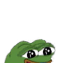
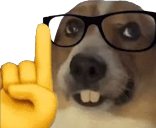
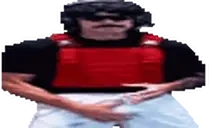
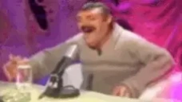
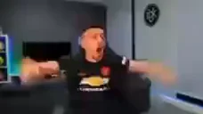
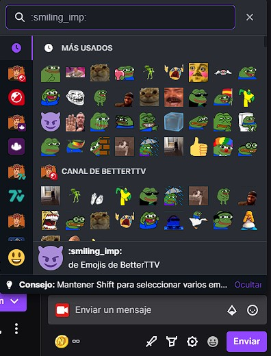
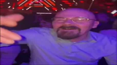

Debemos de tener en cuenta que es necesario ver el stream desde un ordenador para poder ver y usar los emotes.
Una vez tenido ento en cuenta, se añade la extension de la sihuiente forma:
Buscais en google "BetterTTV extensión" o haz clic aquí: BetterTTV


Para esto, es mejor que veais las siguientes imagenes. Así será mas fácil para vosotros:

Dentro del chat de un canal de twitch le clicas al engranaje


Verás este menú y debes de clickar en Ajustes de BetterTTV
Y debes de marar las siguientes opciones:



Y de esta manera ya tendrás un menu donde podrás ver que emotes hay



Made by Nauu08
